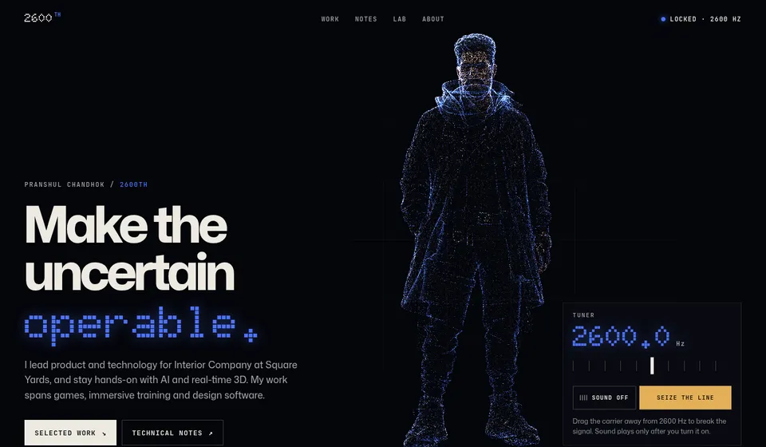
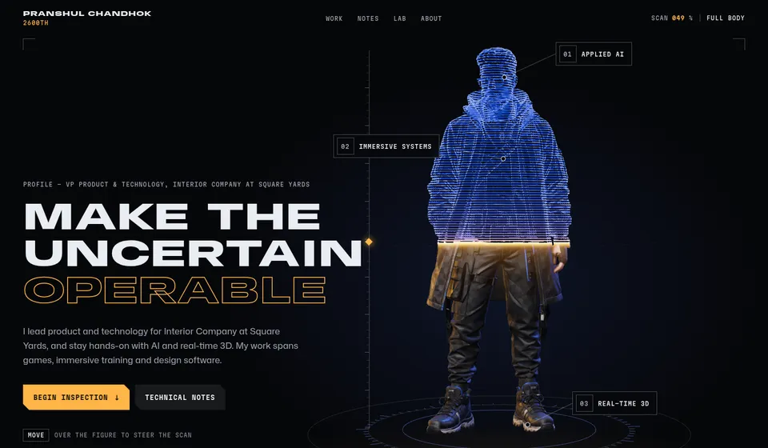
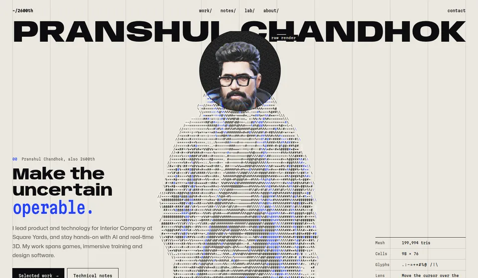

Selected 01 Signal, rebuilt as the full homepage experience. Open Signal v2 →
Three ways to put the builder inside the site.
Each direction uses the same 3D scan of the 2600th character, the same real copy and projects, and the same accessibility floor. What changes is the idea the 3D serves. Open each one, scroll the whole page, move the cursor over the figure, and try it on a phone.
-

01 Selected · v2
Signal
The 2600 Hz story. The portrait is a live point cloud that tears like an analog signal when the carrier is detuned and locks at 2600 Hz. Scrolling collapses the figure into an oscilloscope trace.
- 3D
- 170k surface samples, custom point shader
- Signature
- Tuner slider, opt-in tone, figure → waveform morph
- Risk
- Depends on the handle actually meaning 2600 Hz. Likeness is impressionistic.
-

02
Scan
An inspection bay. A gold laser plane splits the figure: a cobalt contour scan above, the full textured render below. The cursor steers the scan. Scrolling moves the camera to the glasses, harness and boots, and each zone opens that domain’s projects.
- 3D
- 200k-tri PBR mesh with patched contour, dither and laser shader
- Signature
- Cursor-steered scan, anchored HUD callouts, scroll-driven camera shots
- Risk
- Heaviest GPU cost. Camera choreography needs device tuning.
-

03
Glyph
The builder rendered in code, on paper. The portrait is drawn live in characters, with edge glyphs following the silhouette and cobalt where the jacket’s piping is. A lens shows the true render underneath. All imagery prints as 1-bit until hovered.
- 3D
- Cell-resolution clay pass + shape-aware ASCII shader, full render only inside the lens
- Signature
- Magazine-cover masthead, cursor lens, dithered imagery
- Risk
- ASCII is a crowded trend. The face reads mostly through the lens.
Side by side
| Criterion | 01 Signal | 02 Scan | 03 Glyph |
|---|---|---|---|
| Register | Dark, cobalt phosphor | Dark, cobalt + laser gold | Light paper, ink + cobalt |
| Uses the likeness | Partly (point cloud) | Fully (textured render) | Through the lens |
| Maps to content | Story of the handle | Body zones = domains = projects | Identity as code |
| Continuity with Velvet Reveal | High | Highest (cobalt, gold, hotspots) | Deliberate break |
| GPU cost (desktop) | Medium | High | Low–medium |
| Effort to production | Medium | Medium–high | Medium |
Original recommendation
You chose 01 Signal, now rebuilt as the full homepage. My first-round recommendation was Scan, for the reasons below.
Take 02 Scan forward. It is the only direction where the 3D does informational work: the body becomes the navigation into the three operating domains. It shows the scan at full fidelity, and it extends the approved cobalt/gold system instead of replacing it.
Keep Signal’s tuner as a Lab easter egg if the 2600 Hz origin is true. Glyph’s dithered imagery could become the Notes treatment if you want a lighter reading surface.
Confidence: moderate. This is a taste call. Your reaction to each on a phone should outweigh it.
What to check
- First five seconds on desktop and phone: do you know who this is and what he does?
- Move the cursor over each figure. Does the interaction feel worth doing twice?
- Scroll to the footer. Does the 3D ever get in the way of reading or clicking?
- Toggle Motion off in the bottom bar. Every page should still be complete.
- Copy: the Signal story assumes the handle refers to 2600 Hz. Confirm or cut.
The model, made web-ready
The supplied GLB was 12.6 MB with two 8192² textures. Decoded, each needs about 340 MB of GPU memory with mipmaps, which risks crashing mobile browsers. The prototypes use two derivatives built by scripts/optimize-model.mjs:
| Variant | Triangles | Textures | File |
|---|---|---|---|
| Source | 2,000,000 | 8192² JPEG ×2 | 12.6 MB |
| Desktop | 199,994 | 2048² + 1024² WebP | 1.87 MB |
| Phone / low memory | 59,996 | 1024² + 512² WebP | 0.63 MB |
Meshopt compression, quantized attributes, and position-welded smooth normals, which the source lacked. Before production: KTX2 textures to cut GPU memory another 4–8×, and a baked normal map if the lower-poly silhouette ever shows.